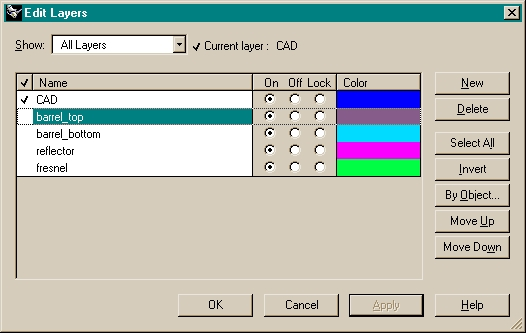
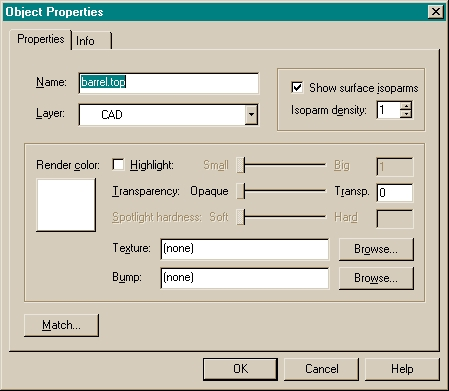

This topic gives an example of preparing a Rhino file in Rhinoceros ("Rhino") before
using the IGES to ASAP Translator, smartIGES™.
The names listed in the
Name column of the Edit Layers dialog box
in Rhino, shown below, were assigned in Rhino. Specifically, each object in the Rhino
*.3dm files is in it own "layer". This activity is performed on the Rhino file and then
exported using the
Export Selected option on the File menu in
Rhino.
Note: When you are prompted for an IGES type, select Breault
Research's ASAP so that the export characteristics are optimized for
importing to ASAP.

You can also name individual objects in Rhino. Select the object in Rhino and from the
Edit menu, select Object Properties.
Note: BRO recommends you use either layer naming or object naming, but not both. Layer
naming provides more general flexibility and is easier to maintain than naming each
individual object.

Tips for Naming Objects Prior to Importing to ASAP
If you take the time to carefully name objects prior to importing them into ASAP, these
are the benefits:
- Assigning optical properties occurs only
once. Optical properties are stored (remembered) in a database and then
automatically associated each time you import the database.
- Hierarchical naming enables easy object
selections with ASAP. For example, with CONSIDER ONLY
NAME.NAME.?, where ? is a wildcard selection character,
any NAME.NAME.? objects are considered.
- Hierarchical naming enables easy object
selection in the BRO 3D Viewer. It is easy to assign view modes, such as Hide and
Wireframe, to objects or groups of objects within a hierarchical tree.
Regarding properties that are associated with an object name, you can create a reflector
object and assign it reflective properties within the smartIGES™ translator. During your
analysis, you determine that an additional reflective object needs to be added. From
within Rhino, you can create this new reflective object, assign it a name so that it is
in the "reflective" tree, and you are done. You do not even need to assign it in the
smartIGES™ translator. The translator, using the object names, assigns it the properties
of the parent object.
For example, if you start with:
REFLECTOR.RIGTHSIDE
REFLECTOR.LEFTSIDE
and assign the top level REFLECTOR to have reflective properties, you can then add a new
object:
REFLECTOR.FLANGE
smartIGES assumes the properties of the parent REFLECTOR.